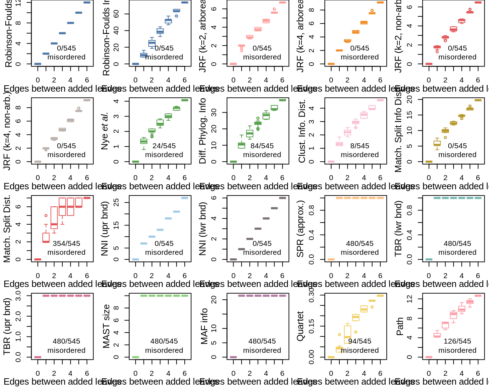

Take an unrooted ten-leaf tree: 
The backbone tree has 10 leaves; 17 test trees were generated by adding an eleventh leaf at each of the 17 edges of the unrooted backbone tree.

The expected distance is the number of edges separating the ‘new leaf’ location from each other.
We would like a metric to display a monotonic increase, such that all tree pairs with n edges between the added leaves are further apart than any tree pair with n − 1 edges between the added leaves.

| Robinson-Foulds | Robinson-Foulds Info | JRF (k=2, arboreal) | JRF (k=4, arboreal) | JRF (k=2, non-arb.) | JRF (k=4, non-arb.) | paste(plain(“Nye”), italic(“et al.”)) | Diff. Phylog. Info | Clust. Info. Dist. | Match. Split Info Dist | Match. Split Dist. | NNI (upr bnd) | NNI (lwr bnd) | SPR (approx.) | TBR (lwr bnd) | TBR (upr bnd) | MAST size | MAF info | Quartet | Path |
|---|---|---|---|---|---|---|---|---|---|---|---|---|---|---|---|---|---|---|---|
| 0 | 0 | 0 | 0 | 0 | 0 | 24 | 84 | 8 | 0 | 354 | 0 | 0 | 480 | 480 | 480 | 480 | 480 | 94 | 126 |